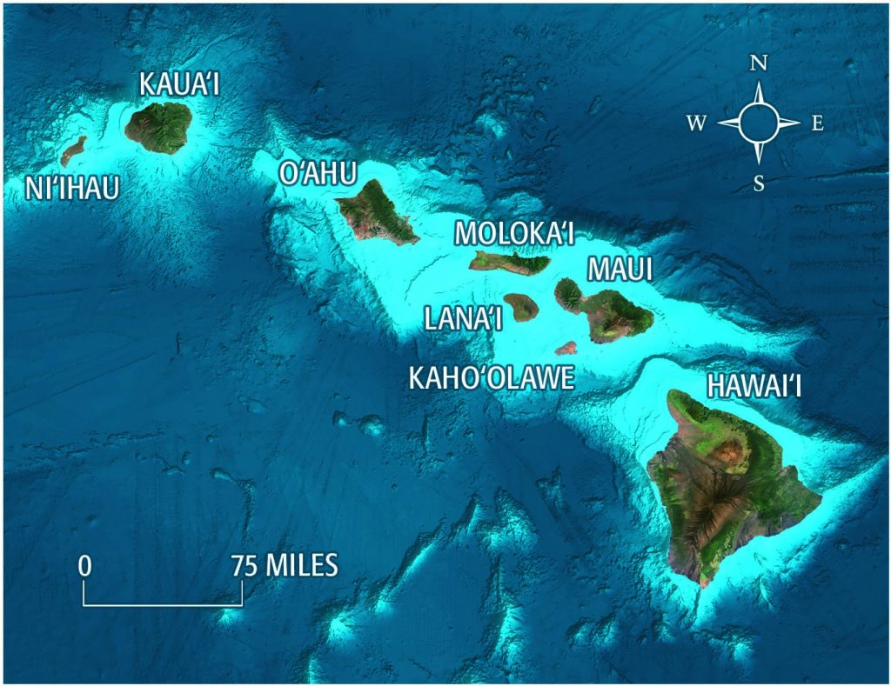
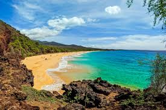
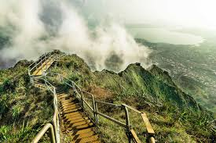

There are 8 different islands, so your experience can vary.
The islands vary in climate, geography, and ecosystems!
Image provided by Hawaii Revealed
The island of Hawai'i (also known as the Big Island) is actually the southern most state in the United States so the temperature there is more like Miami compared to O'ahu where the median temperature is in the mid 80's. Kaua'i is known as the Garden Island due the wide variety of plants and flowers that floruious on the island.
Hawaii has some world class beaches
Hawaii is home to some of the most famous beaches in the world
Image provided by Conde Nast Traveler
Maui has recently become a tourist hotspot for honeymooners, scuba diving enthusiast, as well as families who want to take in the true majesty that Hawaii has to offer.
If you dont like the beach, there are fantastic hiking trails on every island.
Hawaii has both flat hiking trails, and mountainous trails that can reach over 3000 feet in elevation!
Image provided by Journey Era
Hiking is one of the most underrated aspects of traveling in Hawaii. Because most often times visitors are too fixated on the beach they are missing some of natures most beautiful landscapes right behind their backs.